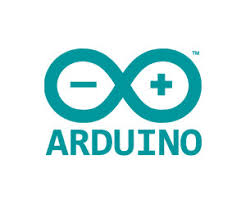

ARDUINO
The open-source Arduino Software (IDE) makes it easy to write code and upload it to the board. It runs on Windows, Mac OS X, and Linux. The environment is written in Java and based on Processing and other open-source software.
This software can be used with any Arduino board.
